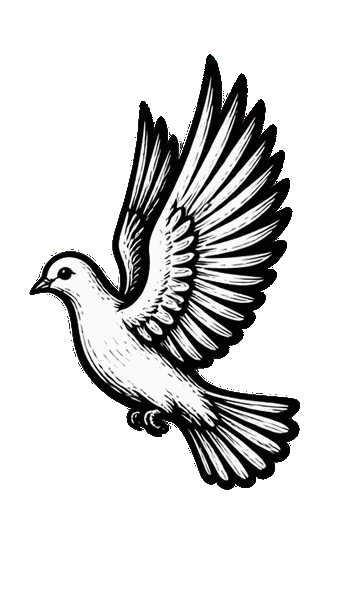
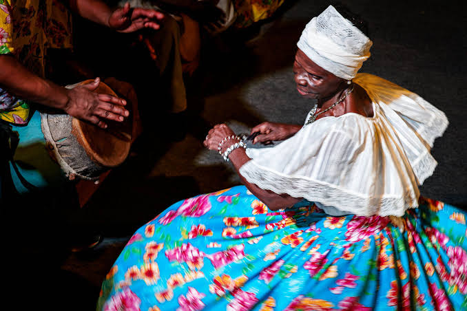

Descubra as principais festividades e celebrações que ocorrem no Maranhão ao longo do ano.
Ocorre no período junino (com ápice em junho, estendendo-se até julho). É um espetáculo vibrante e teatral que encena a lenda de Pai Francisco e Mãe Catirina (uma trabalhadora grávida que deseja comer a língua do boi mais bonito da fazenda). Grupos vestidos com roupas ricamente bordadas se apresentam em terreiros e "arraiais" pelas cidades, acompanhados por ritmos contagiantes de toadas.
Surgiu no século XVIII durante o período colonial e da escravidão. Nasceu da fusão das culturas africana, indígena e europeia, refletindo a resistência dos povos escravizados e a devoção popular aos santos católicos (principalmente São João e São Pedro).
Ocorre no período de Pentecostes (sete semanas após a Páscoa, entre maio e junho). A comunidade elege e recria uma verdadeira "corte imperial" composta por crianças e jovens vestidos em trajes nobres de época. Durante dias há missas, alvoradas, distribuição gratuita de doces e banquetes para a população, tudo ritmado pelas "caixeiras" — mulheres que cantam e tocam o tambor de caixa.

De tradição católica portuguesa, foi trazida ao Maranhão no período colonial por colonos dos Açores. No Brasil, incorporou forte identidade comunitária, onde o ato de ofertar comida e acolher a todos simboliza a fartura e a caridade trazidas pelo Espírito Santo.
Ocorre ao longo de todo o ano (sem data fixa, mas com forte presença no Carnaval e no São João). É uma manifestação alegre e espontânea em que mulheres com saias longas e coloridas dançam em roda ao som de três tambores artesanais (chamados de parelha). A dança é marcada pelo gestual da umbigada (punga), onde uma dançarina toca o ventre na outra para passar a vez de dançar no centro da roda.

Nascido no século XIX nas áreas rurais e engenhos do Maranhão, foi criado pelos negros escravizados como forma de lazer, resistência cultural e culto aos orixás (especialmente São Benedito na tradição sincretizada). É um símbolo vivo do patrimônio afro-brasileiro.